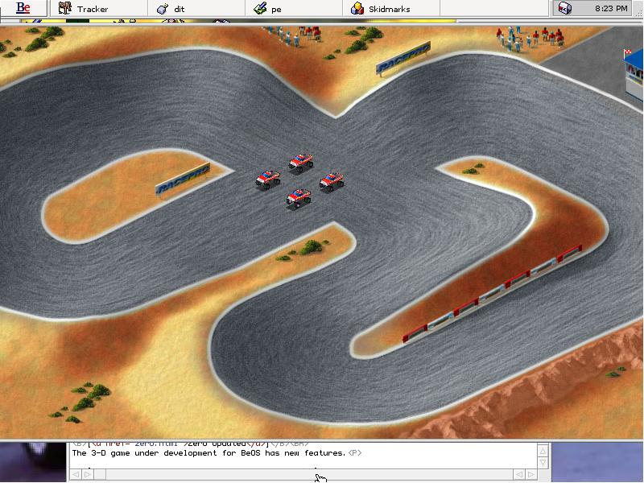

16 February 1998 (YABOSCU) - A pre-pre-alpha test of SkidMarks for the BeOS shows the BeOS gaming community as being viable and strong.
SkidMarks is an off-road track racing game with numerous tracks and levels of difficulty. Future versions will support multiplayer gaming and networking. This game definitely has lots of potential.
Graphics are spectacular and sharp. Animation is amazingly smooth. Sound is wonderful as well. Add a subwoofer and you feel as if you're there on the tracks picking up the dirt. Game play is like Super Off-Road, a popular game for the IBM PC, Game Gear, Sega Genesis, Nintendo, Game Boy, and Super Nintendo.
The tested version is very early and primitive. Lots of changes are in store for the
future. At the moment, a few tracks work incorrectly and networking has not been
implemented. The computer players are a bit awkward and screen resolutions are in need of
repair. Look forward to future versions of this spectacular game.
Give it a try.
